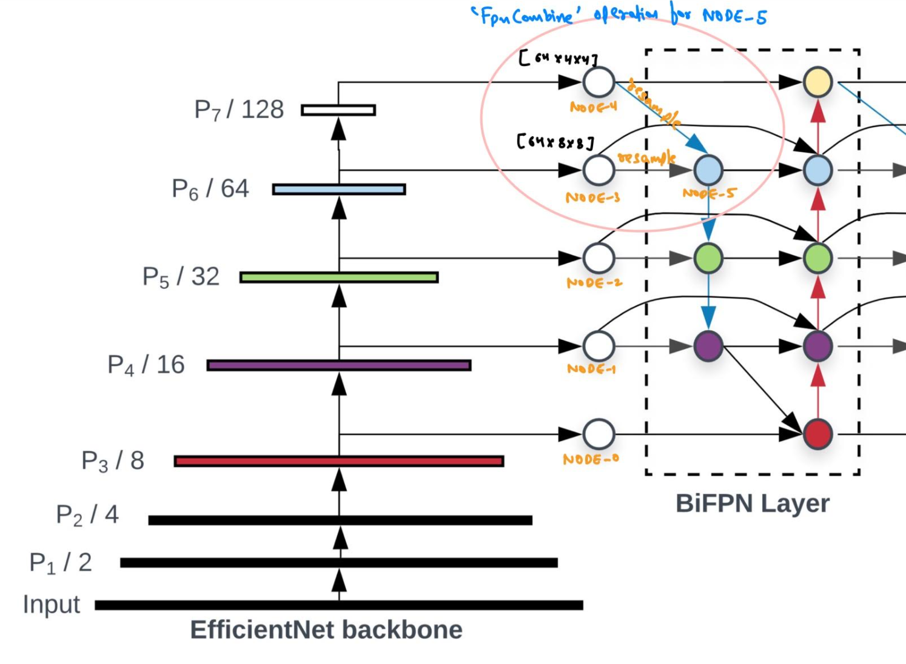

The EfficientDet Architecture in PyTorch
In this blog post, we will look at how to implement the EfficientDet architecture in PyTorch from scratch.
This blog post is a direct continuation of my previous blog post explaining EfficientDets. In my previous post, we looked and understood what’s inside an EfficientDet and also read about the various components such as BiFPN and Compound Scaling that make an EfficientDet network so powerful.
Today, our focus will be to build on top of that knowledge and showcase how to implement the network using PyTorch step-by-step. Throughout this blog post I have added some side notes to be able to explain things better.
These side-notes would look something like this.
NOTE: The code implementations shared below are not my own. All code shown below has been directly copied from Ross Wightman’s wonderful repo efficientdet-pytorch. efficientdet-pytorch makes heavy use of timm to create the backbone network and also for several other operations.
As part of this blog post - we will not be looking at the source code of
timm. We will only be looking at the implementation insideefficientdet-pytorchrepo. This is a conscious decision to keep this blog post from blowing up. Also, everything below is based on “my understanding” of the code. It is possible that Ross might have implemented things differently than the way in which I have understood them.

There are few notable things in the architecture above that we must look at before starting with the implementation: 1. The BiFPN Layer only interacts with the feature maps at level 3-7 of the backbone network. 2. EfficientNets are used as the backbone network for EfficientDets. 3. There are bottom-up and top-down connections between the feature maps at different levels. Thus, we would need to be able to Upsample or Downsample the features. 4. The BiFPN Network consists of multiple BiFPN Layers and the number of BiFPN layers depends on the size of the EfficientDet (compound scaling). 5. The EfficientDet Architecture consists of two main components - Backbone + BiFPN network. 6. Each “Node” inside a BiFPN layer can accept either 2 or 3 inputs and it combines them to produce a single output.
We are going to be using a bottom-up approach in coding this time and build the EfficientDet together component by component.
1 ResampleFeatureMap
So, the first thing we are going to implement is a class called ResampleFeatureMap that is able to upsample or downsample an input feature map based on a parameter called reduction_ratio. This class typically represents the “arrows” in the architecture diagram above.
class ResampleFeatureMap(nn.Sequential):
def __init__(
self, in_channels, out_channels, reduction_ratio=1., pad_type='', downsample=None, upsample=None,
norm_layer=nn.BatchNorm2d, apply_bn=False, conv_after_downsample=False, redundant_bias=False):
super(ResampleFeatureMap, self).__init__()
downsample = downsample or 'max'
upsample = upsample or 'nearest'
self.in_channels = in_channels
self.out_channels = out_channels
self.reduction_ratio = reduction_ratio
self.conv_after_downsample = conv_after_downsample
conv = None
if in_channels != out_channels:
conv = ConvBnAct2d(
in_channels, out_channels, kernel_size=1, padding=pad_type,
norm_layer=norm_layer if apply_bn else None,
bias=not apply_bn or redundant_bias, act_layer=None)
if reduction_ratio > 1:
if conv is not None and not self.conv_after_downsample:
self.add_module('conv', conv)
if downsample in ('max', 'avg'):
stride_size = int(reduction_ratio)
downsample = create_pool2d(
downsample, kernel_size=stride_size + 1, stride=stride_size, padding=pad_type)
else:
downsample = Interpolate2d(scale_factor=1./reduction_ratio, mode=downsample)
self.add_module('downsample', downsample)
if conv is not None and self.conv_after_downsample:
self.add_module('conv', conv)
else:
if conv is not None:
self.add_module('conv', conv)
if reduction_ratio < 1:
scale = int(1 // reduction_ratio)
self.add_module('upsample', Interpolate2d(scale_factor=scale, mode=upsample))Here is the general idea - if out_channels is not equal to in_channels, then use a 1x1 convolution operation to make them the same. Also, if the reduction ratio is not equal to 1, then either upsample or downsample the input feature map based on the requirements. If reduction_ratio<1 then, Upsample the input, otherwise if reduction_ratio>1 then, Downsample the input.
Upsampling or Downsampling in simple terms refers to making the spatial dimensions of the input feature map larger or smaller. Upsampling is generally done using bilinear interpolation and downsampling is generally done using pooling.
So an example of using this class, assuming all imports work, would be:
# downsampling
inp = torch.randn(1, 40, 64, 64)
resample = ResampleFeatureMap(in_channels=40, out_channels=112, reduction_ratio=2)
out = resample(inp)
print(inp.shape, out.shape)
>> torch.Size([1, 40, 64, 64]) torch.Size([1, 112, 32, 32])
# upsampling
inp = torch.randn(1, 40, 64, 64)
resample = ResampleFeatureMap(in_channels=40, out_channels=112, reduction_ratio=0.5)
out = resample(inp)
print(inp.shape, out.shape)
>> torch.Size([1, 40, 64, 64]) torch.Size([1, 112, 128, 128])One key thing that’s part of this class, is that the class does not have a forward method defined that is common to almost all layers in PyTorch. The reason is that this class inherits from nn.Sequential instead of nn.Module. This class does not need a forward method to be defined and automatically calls the modules defined in this class one by one. That is why we do things like self.add_module inside the ResampleFeatureMap class.
Another thing, the convolution operation inside this ResampleFeatureMap calls ConvBnAct2d and not nn.Conv2d. ConvBnAct2d as the name suggests is a Convolution operation followed by Batch Normalization and an Activation function.
So, here is the implementation of ConvBnAct2d:
class ConvBnAct2d(nn.Module):
def __init__(self, in_channels, out_channels, kernel_size, stride=1, dilation=1, padding='', bias=False,
norm_layer=nn.BatchNorm2d, act_layer=_ACT_LAYER):
super(ConvBnAct2d, self).__init__()
self.conv = create_conv2d(
in_channels, out_channels, kernel_size, stride=stride, dilation=dilation, padding=padding, bias=bias)
self.bn = None if norm_layer is None else norm_layer(out_channels)
self.act = None if act_layer is None else act_layer(inplace=True)
def forward(self, x):
x = self.conv(x)
if self.bn is not None:
x = self.bn(x)
if self.act is not None:
x = self.act(x)
return xThe create_conv2d is a function from timm, that creates a nn.Conv2d layer in our case. We won’t go into the source code of this function as it is part of the timm library, which we will look into a series of blog posts later.
Now, let’s start to get into the tricky bits. Let’s see how could we implement a single BiFpnLayer.
2 BiFPN Layer

Looking at the image above, we can see that a BiFPN Layer has Nodes. To be specific, each BiFPN Layer has 5 input Nodes (number 0-4) and 8 internal nodes (number 5-12). The input nodes for the first BiFPN Layer are feature outputs from the EfficientNet Backbone. For the subsequent BiFpn Layers, the feature outputs come from the previous BiFPN Layer.
Also, each arrow is the ResampleFeatureMap class where the blue arrows perform DownSampling and the red arrows perform Upsampling. From a code perspective, there are some things that we need to be able to implement the BiFPN Layer: 1. We need to be able to extract the feature maps from the EfficientNet Backbone. timm will do this for us. As you’ll notice later, we call timm.create_model method passing in a parameter called out_indices and also features_only=True. This tells timm to create a model that extracts the required feature maps for us at the correct level. 2. We need to be able to combine the features coming from different nodes at different levels. The class FpnCombine will take care of this for us which we will look at below. 3. We need to define the numbers and structures of the nodes in Python similar to the diagram. > For example, our implementation should know that Node-6 is the intermediate Node at level **P5** and it accepts the outputs of Node-5 and Node-2 as inputs. 4. Not all Nodes accept the same number of inputs. Some accept 2 inputs whereas some nodes (such as 9, 10, 11) accept 3 inputs as shown in the fig-2. We can clearly satisfy this requirement by passing the inputs as a List of tensors. 5. The output features from the EfficientNet-B0backbone at level P3-P5 have 40, 112, 320 number of channels respectively and each spatial dimension is half that of the previous level. > This is important to note: considering an input image of size [3, 512, 512], the size of feature maps at levels P3-P5 would be [40, 64, 64], [112, 32, 32], [320, 16, 16] respectively.
With this general understanding, let’s get to work.
First things first, how could our implementation get to know about the numbers and structures of the nodes? There is a function called get_fpn_config that returns a Python dictionary like so:
fpn_config = get_fpn_config()
fpn_config
>> {'nodes': [{'reduction': 64, 'inputs_offsets': [3, 4], 'weight_method': 'fastattn'}, {'reduction': 32, 'inputs_offsets': [2, 5], 'weight_method': 'fastattn'}, {'reduction': 16, 'inputs_offsets': [1, 6], 'weight_method': 'fastattn'}, {'reduction': 8, 'inputs_offsets': [0, 7], 'weight_method': 'fastattn'}, {'reduction': 16, 'inputs_offsets': [1, 7, 8], 'weight_method': 'fastattn'}, {'reduction': 32, 'inputs_offsets': [2, 6, 9], 'weight_method': 'fastattn'}, {'reduction': 64, 'inputs_offsets': [3, 5, 10], 'weight_method': 'fastattn'}, {'reduction': 128, 'inputs_offsets': [4, 11], 'weight_method': 'fastattn'}]}For now, let’s not worry about where this function comes from. Let’s just consider we know that such a function exists which returns a dictionary output like above. And let’s assume that we need to build our
BiFPN Layerusing the config returned from theget_fpn_config().
By looking at the fpn_config, we can see that nodes is a List of Dicts and each item in the List represents a single Node. Specifically, the list represents Nodes 5-12. As can be seen and confirmed with the help of fig-2, Node-5 which is the first item in the List accepts the outputs from Nodes 3 & 4 as represented by {'reduction': 64, 'inputs_offsets': [3, 4], 'weight_method': 'fastattn'} in the List, Node-6 which is the second item in the List accepts the outputs from Nodes 2 & 5 as represented by {'reduction': 32, 'inputs_offsets': [2, 5], 'weight_method': 'fastattn'} in the List and so on..
I repeat, let’s not worry about where the
fpn_configcomes from but let’s just say there is such a config that god created for us and we will use it to build theBiFPN Layer.
You might ask what’s this reduction inside the fpn_config? Can you see in fig-2 that there are somethings written like “input, P1/2, P2/4, P3/8…, well the denominator number is the reduction. For example, at level P5, where Node-5 exists, the reduction is 32. What this means is that the spatial dimensions of the feature map at this level are of size H/32 x W/32 where H and W are the original image Height and Width.
Great, good work so far! At least now we have a basic structure to build our BiFPN Layer on top of. Also, now we know which Nodes are linked to which other Nodes as defined inside the fpn_config.
So, for now, let’s move on to implementing Nodes without implementing the BiFPNLayer first.
2.1 FNode
Now inside a Node, we need to be able to accept some iputs, combine those together, perform some computation on this combined input and output a tensor.
class Fnode(nn.Module):
""" A simple wrapper used in place of nn.Sequential for torchscript typing
Handles input type List[Tensor] -> output type Tensor
"""
def __init__(self, combine: nn.Module, after_combine: nn.Module):
super(Fnode, self).__init__()
self.combine = combine
self.after_combine = after_combine
def forward(self, x: List[torch.Tensor]) -> torch.Tensor:
return self.after_combine(self.combine(x))This is exactly what this class Fnode does above. As can be seen in the forward method, it accepts List of Tensors, performs the combine to combine the inputs together and also performs the computations after_combine operation on them and returns the output.
Now what are these combine and after_combine operations? The combine operation is the one that will make sure that the input tensors are changed to be of the same resolution and once they are of the same size, it will combine them together. Remember fig-2? A Node can accept inputs from various other Nodes that might not necessarily be at the same level. Thus there might be a need to do a resampling operation before we can combine the inputs to make them be of the same size and same number of channels. Only then can we sum the inputs up.
In the actual implementation, we do not actually sum the input tensors but rather do something called
Fast normalized fusionthat has been described in section 3.3 of the paper. But, it is completely okay if for now we assume that combine the inputs by simply summing them up once they are of the same size.
Next, we still need to perform the “fusion”. Simply combining the inputs up might not be enough and we still need to do some more computation on top to get a good representation or do the actual “fusion” of the Node outputs. This “fusion” operation is a Depthwise Separable Convolution followed by a BatchNorm and activation layer.
This has been mentioned in the paper at the end of section-3 as well. > Notably, to further improve the efficiency, we use depthwise separable convolution for feature fusion, and add batch normalization and activation after each convolution.
Great, now that we have a general understanding of the combine and after_combine operations, let’s implement them below.
2.1.1 The “combine” method - FpnCombine
Note: This is the most complicated part of the code. So, please, bear with me. Re-read this section multiple times if needed.:)
Let’s understand the general idea of this class before looking at the code.

Assuming that the combine operation is simply a sum operation for now. As can be seen from the figure above, Node-5 accepts the inputs from Node-3 and Node-4. Now these feature maps are of different sizes and have different number of channels so we simply can’t sum them up. The feature map size at Node-4 is [64, 4, 4] whereas at Node-3 is [64, 8, 8]. So to be able to combine at Node-5, we will convert both feature maps to be of the size [64, 8, 8] cause that’s what the size of feature map at Node-5 should be.
This class, merely does this operation. It will first resample both feature maps to be of the same size as the required [64, 8, 8] and then it will combine them together.
So, now that we have some idea of what we want to accomplish, let’s look at the code implementation.
class FpnCombine(nn.Module):
def __init__(self, feature_info, fpn_config, fpn_channels, inputs_offsets, target_reduction, pad_type='',
downsample=None, upsample=None, norm_layer=nn.BatchNorm2d, apply_resample_bn=False,
conv_after_downsample=False, redundant_bias=False, weight_method='attn'):
super(FpnCombine, self).__init__()
self.inputs_offsets = inputs_offsets
self.weight_method = weight_method
self.resample = nn.ModuleDict()
for idx, offset in enumerate(inputs_offsets):
in_channels = fpn_channels
if offset < len(feature_info):
in_channels = feature_info[offset]['num_chs']
input_reduction = feature_info[offset]['reduction']
else:
node_idx = offset - len(feature_info)
input_reduction = fpn_config.nodes[node_idx]['reduction']
reduction_ratio = target_reduction / input_reduction
self.resample[str(offset)] = ResampleFeatureMap(
in_channels, fpn_channels, reduction_ratio=reduction_ratio, pad_type=pad_type,
downsample=downsample, upsample=upsample, norm_layer=norm_layer, apply_bn=apply_resample_bn,
conv_after_downsample=conv_after_downsample, redundant_bias=redundant_bias)
if weight_method == 'attn' or weight_method == 'fastattn':
self.edge_weights = nn.Parameter(torch.ones(len(inputs_offsets)), requires_grad=True) # WSM
else:
self.edge_weights = None
def forward(self, x: List[torch.Tensor]):
dtype = x[0].dtype
nodes = []
for offset, resample in zip(self.inputs_offsets, self.resample.values()):
input_node = x[offset]
input_node = resample(input_node)
nodes.append(input_node)
if self.weight_method == 'attn':
normalized_weights = torch.softmax(self.edge_weights.to(dtype=dtype), dim=0)
out = torch.stack(nodes, dim=-1) * normalized_weights
elif self.weight_method == 'fastattn':
edge_weights = nn.functional.relu(self.edge_weights.to(dtype=dtype))
weights_sum = torch.sum(edge_weights)
out = torch.stack(
[(nodes[i] * edge_weights[i]) / (weights_sum + 0.0001) for i in range(len(nodes))], dim=-1)
elif self.weight_method == 'sum':
out = torch.stack(nodes, dim=-1)
else:
raise ValueError('unknown weight_method {}'.format(self.weight_method))
out = torch.sum(out, dim=-1)
return outThere’s actually quite a bit happening in this layer but hey, don’t be worried. Take a deep breath and read on! This layer will make sense. :)
Something new that we have encountered in this class is feature_info. What is it? It’s something that comes from timm. Do you remember that we are using the EfficientNet backbone? This backbone has something called a feature_info which we can see below.
Let’s not worry about how this
get_feature_infofunction is actually implemented. But, let’s just assume there is this beatiful function that gives us the desired outputs.
backbone = timm.create_model(
config.backbone_name, features_only=True, out_indices=(2, 3, 4),
pretrained=True, **config.backbone_args)
feature_info = get_feature_info(backbone)
print(feature_info, '\n')
>> [{'num_chs': 40, 'reduction': 8}, {'num_chs': 112, 'reduction': 16}, {'num_chs': 320, 'reduction': 32}]So the feature_info is something that tells us how many channels are there at each reduction level. For example, the number of channels at level P5 or reduction 32 is 320 as shown in the feature_info dictionary. Note that this matches the number of channels shown in fig-2. Note that this feature_info is actually missing levels P6 and P7 where the reduction is 64 and 128 respectively. Let’s again assume there is some part of code that updates this feature_info so it actually looks something like below for the first BiFpnLayer:
>> [{'num_chs': 40, 'reduction': 8}, {'num_chs': 112, 'reduction': 16}, {'num_chs': 320, 'reduction': 32}, {'num_chs': 64, 'reduction': 64}, {'num_chs': 64, 'reduction': 128}]Great, now let’s dissect the __init__ method of this FpnCombine class.
def __init__(self, feature_info, fpn_config, fpn_channels, inputs_offsets, target_reduction, pad_type='',
downsample=None, upsample=None, norm_layer=nn.BatchNorm2d, apply_resample_bn=False,
conv_after_downsample=False, redundant_bias=False, weight_method='attn'):
super(FpnCombine, self).__init__()
self.inputs_offsets = inputs_offsets
self.weight_method = weight_method
self.resample = nn.ModuleDict()
for idx, offset in enumerate(inputs_offsets):
in_channels = fpn_channels
if offset < len(feature_info):
in_channels = feature_info[offset]['num_chs']
input_reduction = feature_info[offset]['reduction']
else:
node_idx = offset - len(feature_info)
input_reduction = fpn_config.nodes[node_idx]['reduction']
reduction_ratio = target_reduction / input_reduction
self.resample[str(offset)] = ResampleFeatureMap(
in_channels, fpn_channels, reduction_ratio=reduction_ratio, pad_type=pad_type,
downsample=downsample, upsample=upsample, norm_layer=norm_layer, apply_bn=apply_resample_bn,
conv_after_downsample=conv_after_downsample, redundant_bias=redundant_bias)
if weight_method == 'attn' or weight_method == 'fastattn':
self.edge_weights = nn.Parameter(torch.ones(len(inputs_offsets)), requires_grad=True) # WSM
else:
self.edge_weights = NoneAs a general idea: > This FpnCombine layer accepts a list of nodes as input nodes. Then it calculates some parameters which are then passed to ResampleFeatureMap to make sure that we resample/resize the feature maps from the input nodes such that we can combine them.
The class accepts feature_info, fpn_config, fpn_channels, inputs_offsets and target_reduction as required inputs. We will focus just on these. We already know the values of feature_info and fpn_config. Let me share them below once again for reference:
>> feature_info = [{'num_chs': 40, 'reduction': 8}, {'num_chs': 112, 'reduction': 16}, {'num_chs': 320, 'reduction': 32}, {'num_chs': 64, 'reduction': 64}, {'num_chs': 64, 'reduction': 128}]
>> fpn_config = {'nodes': [{'reduction': 64, 'inputs_offsets': [3, 4], 'weight_method': 'fastattn'}, {'reduction': 32, 'inputs_offsets': [2, 5], 'weight_method': 'fastattn'}, {'reduction': 16, 'inputs_offsets': [1, 6], 'weight_method': 'fastattn'}, {'reduction': 8, 'inputs_offsets': [0, 7], 'weight_method': 'fastattn'}, {'reduction': 16, 'inputs_offsets': [1, 7, 8], 'weight_method': 'fastattn'}, {'reduction': 32, 'inputs_offsets': [2, 6, 9], 'weight_method': 'fastattn'}, {'reduction': 64, 'inputs_offsets': [3, 5, 10], 'weight_method': 'fastattn'}, {'reduction': 128, 'inputs_offsets': [4, 11], 'weight_method': 'fastattn'}]}Let’s just assume that we are currently creating an instance of this class for Node-5 as an example.
The inputs_offsets would be a list of Node id’s such as [3,4] for Node-5. This states that Node-5 accepts the outputs of Node-3 and Node-4 as inputs and has to combine them.
The only variables that we do not know the values of are fpn_channels and target_reduction. The fpn_channels has a value of 64.Great, what about target_reduction? target_reduction just refers to the reduction value of the current Node for which we are creating this FpnCombine class. So, from the fpn_config we can see the reduction for Node-5 is 64. Thus target_reduction=64.
Note that the value of
target_reductionforNode-6be 32, forNode-7it will be 16 and so on..
I leave it to the reader to see how the self.resample inside the FpnCombine is a list of ResampleFeatureMap that looks something like below for Node-5:
>> self.resample
ModuleDict(
(3): ResampleFeatureMap: (inp_ch:64, out_ch:64, reduction:1.0)
(4): ResampleFeatureMap: (inp_ch:64, out_ch:64, reduction:0.5)
)For Node-6, this looks something like:
>> ModuleDict(
(2): ResampleFeatureMap: (inp_ch:320, out_ch:64, reduction:1.0)
(5): ResampleFeatureMap: (inp_ch:64, out_ch:64, reduction:0.5)
)And finally for Node-7 as an example, this looks like:
ModuleDict(
(1): ResampleFeatureMap: (inp_ch:112, out_ch:64, reduction:1.0)
(6): ResampleFeatureMap: (inp_ch:64, out_ch:64, reduction:0.5)
)If you follow along the
forloop inside the__init__method, what I have stated above will become pretty clear to you. It might be a good idea right now to take out a pen and paper, and actually try to guess the values that get passed toResampleFeatureMapfor each input offset. If you don’t get it, feel free to reach out to me and I’ll share the solution. Contact details have been provided at the last of this blog post.
I hope that you’ve been able to trace the values of self.resample for the various Nodes. Now that we have already looked at __init__, the forward method is pretty straightforward:
def forward(self, x: List[torch.Tensor]):
dtype = x[0].dtype
nodes = []
for offset, resample in zip(self.inputs_offsets, self.resample.values()):
input_node = x[offset]
input_node = resample(input_node)
nodes.append(input_node)
if self.weight_method == 'attn':
normalized_weights = torch.softmax(self.edge_weights.to(dtype=dtype), dim=0)
out = torch.stack(nodes, dim=-1) * normalized_weights
elif self.weight_method == 'fastattn':
edge_weights = nn.functional.relu(self.edge_weights.to(dtype=dtype))
weights_sum = torch.sum(edge_weights)
out = torch.stack(
[(nodes[i] * edge_weights[i]) / (weights_sum + 0.0001) for i in range(len(nodes))], dim=-1)
elif self.weight_method == 'sum':
out = torch.stack(nodes, dim=-1)
else:
raise ValueError('unknown weight_method {}'.format(self.weight_method))
out = torch.sum(out, dim=-1)
return outThere isn’t a lot happening. We just go over the inputs one by one, perform the required resample operation as in self.resample to make the input feature maps to be of the required size and finally do the “combination” inside the forward.
2.1.2 The after_combine method
The after_combine method is nothing but a** Depthwise Separable Convolution** that we will look at as part of the BiFpnLayer implementation. But for completeness of FNode, I state it below too:
conv_kwargs = dict(
in_channels=fpn_channels, out_channels=fpn_channels, kernel_size=3, padding=pad_type,
bias=False, norm_layer=norm_layer, act_layer=act_layer)
after_combine = nn.Sequential()
after_combine.add_module(
'conv', SeparableConv2d(**conv_kwargs))3 BiFPN Layer Implementation
Finally, we are ready to look at the implementation of the BiFPN Layer.
If you have understood the implementation of
FpnCombine, and also the general idea so far, then you will find the implementation ofBiFPN Layeras something that brings all the pieces together. It should be intuitive rather than complex.
So, let’s have a look at it.
class BiFpnLayer(nn.Module):
def __init__(self, feature_info, fpn_config, fpn_channels, num_levels=5, pad_type='',
downsample=None, upsample=None, norm_layer=nn.BatchNorm2d, act_layer=_ACT_LAYER,
apply_resample_bn=False, conv_after_downsample=True, conv_bn_relu_pattern=False,
separable_conv=True, redundant_bias=False):
super(BiFpnLayer, self).__init__()
self.num_levels = num_levels
self.conv_bn_relu_pattern = False
self.feature_info = []
self.fnode = nn.ModuleList()
for i, fnode_cfg in enumerate(fpn_config.nodes):
logging.debug('fnode {} : {}'.format(i, fnode_cfg))
reduction = fnode_cfg['reduction']
combine = FpnCombine(
feature_info, fpn_config, fpn_channels, tuple(fnode_cfg['inputs_offsets']),
target_reduction=reduction, pad_type=pad_type, downsample=downsample, upsample=upsample,
norm_layer=norm_layer, apply_resample_bn=apply_resample_bn, conv_after_downsample=conv_after_downsample,
redundant_bias=redundant_bias, weight_method=fnode_cfg['weight_method'])
after_combine = nn.Sequential()
conv_kwargs = dict(
in_channels=fpn_channels, out_channels=fpn_channels, kernel_size=3, padding=pad_type,
bias=False, norm_layer=norm_layer, act_layer=act_layer)
if not conv_bn_relu_pattern:
conv_kwargs['bias'] = redundant_bias
conv_kwargs['act_layer'] = None
after_combine.add_module('act', act_layer(inplace=True))
after_combine.add_module(
'conv', SeparableConv2d(**conv_kwargs) if separable_conv else ConvBnAct2d(**conv_kwargs))
self.fnode.append(Fnode(combine=combine, after_combine=after_combine))
self.feature_info.append(dict(num_chs=fpn_channels, reduction=reduction))
self.feature_info = self.feature_info[-num_levels::]
def forward(self, x: List[torch.Tensor]):
for fn in self.fnode:
x.append(fn(x))
return x[-self.num_levels::]We already know what the values of the required parameters are feature_info, fpn_config and fpn_channels. I share them for reference below once again:
feature_info = [{'num_chs': 40, 'reduction': 8}, {'num_chs': 112, 'reduction': 16}, {'num_chs': 320, 'reduction': 32}, {'num_chs': 64, 'reduction': 64}, {'num_chs': 64, 'reduction': 128}]
fpn_config = {'nodes': [{'reduction': 64, 'inputs_offsets': [3, 4], 'weight_method': 'fastattn'}, {'reduction': 32, 'inputs_offsets': [2, 5], 'weight_method': 'fastattn'}, {'reduction': 16, 'inputs_offsets': [1, 6], 'weight_method': 'fastattn'}, {'reduction': 8, 'inputs_offsets': [0, 7], 'weight_method': 'fastattn'}, {'reduction': 16, 'inputs_offsets': [1, 7, 8], 'weight_method': 'fastattn'}, {'reduction': 32, 'inputs_offsets': [2, 6, 9], 'weight_method': 'fastattn'}, {'reduction': 64, 'inputs_offsets': [3, 5, 10], 'weight_method': 'fastattn'}, {'reduction': 128, 'inputs_offsets': [4, 11], 'weight_method': 'fastattn'}]}
fpn_channels = 64The BiFPN Layer implementation is the glue that binds the FNode, FpnCombine, ResampleFeatureMap classes together. Let’s see how?
Inside the __init__ method, we iterate over the Nodes. For each node, combine is an instance of FpnCombine and after_combine is a SeparableConv2d nn Module. Next, we create a FNode for each of the Nodes inside the fpn_config with each FNode having it’s own combine and after_combine values.
Finally, in the forward method, where the input x is list of feature maps from levels P3-P7, is passed through to each node and we append the outputs. Finally, we return the last 5 outputs (feature maps), that are then passed on to another BiFpnLayer which does the same thing again.
If this sounds confusing, then please feel free to reach out to me. I will share the solution. But I really want you to think about what I have stated above. It’s better if you spend some time trying to think about it than just asking me for the solution that explains this.
4 BiFPN
Having already understood how to implement the BiFPN Layer, let’s now look at how to implement the BiFPN network. It’s really a simple case of having multiple BiFPN layers inside a single BiFPN network.
class BiFpn(nn.Module):
def __init__(self, config, feature_info):
super(BiFpn, self).__init__()
self.num_levels = config.num_levels
norm_layer = config.norm_layer or nn.BatchNorm2d
if config.norm_kwargs:
norm_layer = partial(norm_layer, **config.norm_kwargs)
act_layer = get_act_layer(config.act_type) or _ACT_LAYER
fpn_config = config.fpn_config or get_fpn_config(
config.fpn_name, min_level=config.min_level, max_level=config.max_level)
self.resample = nn.ModuleDict()
for level in range(config.num_levels):
if level < len(feature_info):
in_chs = feature_info[level]['num_chs']
reduction = feature_info[level]['reduction']
else:
# Adds a coarser level by downsampling the last feature map
reduction_ratio = 2
self.resample[str(level)] = ResampleFeatureMap(
in_channels=in_chs,
out_channels=config.fpn_channels,
pad_type=config.pad_type,
downsample=config.downsample_type,
upsample=config.upsample_type,
norm_layer=norm_layer,
reduction_ratio=reduction_ratio,
apply_bn=config.apply_resample_bn,
conv_after_downsample=config.conv_after_downsample,
redundant_bias=config.redundant_bias,
)
in_chs = config.fpn_channels
reduction = int(reduction * reduction_ratio)
feature_info.append(dict(num_chs=in_chs, reduction=reduction))
self.cell = SequentialList()
for rep in range(config.fpn_cell_repeats):
logging.debug('building cell {}'.format(rep))
fpn_layer = BiFpnLayer(
feature_info=feature_info,
fpn_config=fpn_config,
fpn_channels=config.fpn_channels,
num_levels=config.num_levels,
pad_type=config.pad_type,
downsample=config.downsample_type,
upsample=config.upsample_type,
norm_layer=norm_layer,
act_layer=act_layer,
separable_conv=config.separable_conv,
apply_resample_bn=config.apply_resample_bn,
conv_after_downsample=config.conv_after_downsample,
conv_bn_relu_pattern=config.conv_bn_relu_pattern,
redundant_bias=config.redundant_bias,
)
self.cell.add_module(str(rep), fpn_layer)
feature_info = fpn_layer.feature_info
def forward(self, x: List[torch.Tensor]):
for resample in self.resample.values():
x.append(resample(x[-1]))
x = self.cell(x)
return xSo let’s have a look at what is self.resample inside here? As you will see in the implementation of the EfficientDet Architecture in the next section, the backbone EfficientNet only returns a total of 3 feature maps for levels P3-P5. We still need to calculate feature maps for levels P6 & P7. This is what the self.resample layer does here.
As you can see in the forward method:
for resample in self.resample.values():
x.append(resample(x[-1]))As I mentioned, x has total of 3 feature maps reprenting levels P3-P5. We call the resample method and append 2 more feature maps to x to make the total length 5 representing the feature maps for levels P3-P7.
Finally, what is self.cell? It’s simply a repetition of BiFPN Layers to represent the BiFPN Network. Since the self.cell is a SequentialList, each BiFPNLayer is called one by one.:)
5 EfficientDet Architecture
This class is the main one - or is it? Considering we have all the pieces already, this class merely puts them all together.
class EfficientDet(nn.Module):
def __init__(self, config, pretrained_backbone=True, alternate_init=False):
super(EfficientDet, self).__init__()
self.config = config
set_config_readonly(self.config)
self.backbone = create_model(
config.backbone_name, features_only=True, out_indices=(2, 3, 4),
pretrained=pretrained_backbone, **config.backbone_args)
feature_info = get_feature_info(self.backbone)
self.fpn = BiFpn(self.config, feature_info)
self.class_net = HeadNet(self.config, num_outputs=self.config.num_classes)
self.box_net = HeadNet(self.config, num_outputs=4)
for n, m in self.named_modules():
if 'backbone' not in n:
if alternate_init:
_init_weight_alt(m, n)
else:
_init_weight(m, n)
def forward(self, x):
x = self.backbone(x)
x = self.fpn(x)
x_class = self.class_net(x)
x_box = self.box_net(x)
return x_class, x_boxThe reader should by now be able to read this code and understand what’s going on. We have already done the bulk of the work together here. Though there are some notable things that I would like to mention: 1. self.backbone returns a total of 3 feature maps because we passed the out_indices=(2, 3, 4). As to how? This comes from timm. 2. I have not explained what a HeadNet is. It is basically a custom head that takes the final outputs of the BiFPN network and either returns a class or bounding box coordinates. The self.class_net and self.box_net together represent the Box Prediction Net as in fig-1.
6 Conclusion
I truly believe that it wasn’t easy to understand how to implement EfficientDets in Tensorflow or PyTorch. The official implementation exists here and the PyTorch version is here.
Thanks to Ross Wightman for his wonderful work in providing us with a PyTorch implementation of the EfficientDet network. It really makes things super easy for the native PyTorch users.
Something I have realised during this exercise, is that, when we are doing something like:
from effdet import get_efficientdet_config, EfficientDet
config = get_efficientdet_config('efficientdet_d0')
efficientdet = EfficientDet(config)
output = efficientdet(inputs)When we are merely using the library, it is hard to appreciate the hard work that the author has put into making things so simple for us. In doing this exercise of going through the source code and to try and explain it to everyone, I have noticed the minor details and have tremendous appreciation for Ross’s hard work. So, thanks so much Ross! And of course to the authors of the EfficientDet for open sourcing the implementation in Tensorflow.
I hope that in today’s blog post I have been able to explain how to implement EfficientDets in Code and take away all the confusion and doubt in case you had any.
As always, constructive feedback is always welcome at @amaarora.
Also, feel free to subscribe to my blog here to receive regular updates regarding new blog posts. Thanks for reading!